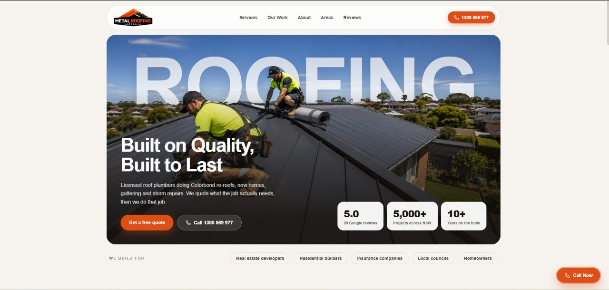

Roofing website design in Perth: tile roofs, long summers and winter leaks
Perth roofers spend summer on restorations and winter on leaks. A good website is built for both, and it knows the difference between Joondalup and Fremantle.

Perth roofers need a website that serves two customers: the summer customer planning a restoration and the winter customer with a leak. Give each a separate page, cover the metro area with a few area pages, and show your credentials and real job photos. Keep a phone number on both pages.
Perth's year splits neatly for roofers. Long, hot, dry summers are restoration season: cleaning, re-pointing and coating tile roofs that have baked for months. Then the winter fronts arrive from the south-west, and the phone fills with leak calls from people who put off the repair until it rained.
A roofing website in Perth should be ready for both kinds of customer, because they search for very different things.
01Who visits a Perth roofing website?
The summer customer is planning. They have noticed faded tiles or moss and want a restoration quote. They read more, compare a few roofers, and look closely at photos and reviews. For them, the site needs restoration pages with clear before-and-after photos and an honest explanation of what a restoration includes.
The winter customer has water coming in. They want a phone number and some sign you can come soon. For them, the site needs a leak repair page that loads fast and puts the call button first.
One block of text for both will not work. Link to both from the first screen and let visitors choose.
02What roofs do Perth homeowners have?
Much of suburban Perth is double brick with concrete or terracotta tile roofs, built over several decades of expansion. Many of those roofs are now due for restoration or replacement. Newer estates in the north and south use more Colorbond, and plenty of owners are swapping old tile for metal.
Coastal suburbs add salt. Homes in Scarborough, Cottesloe or Rockingham get onshore wind and spray, and metal roofs and fixings there need the right materials. The afternoon sea breeze, the Fremantle Doctor, is pleasant for people and hard on anything loose on a roof. If you know which materials last on the coast, put that knowledge on your site.
Severe hail is less common than in Sydney or Brisbane, but it does happen. Storms that hit the city and the western suburbs have damaged a lot of homes over the years.
03Area pages for a spread-out city
Perth's metro area runs a long way along the coast. A few area pages, each with a real job or two, will cover it:
- Northern suburbs: Joondalup, Wanneroo, Clarkson, Duncraig.
- Western suburbs and the coast: Scarborough, Cottesloe, Claremont, Fremantle.
- Eastern suburbs and the hills: Midland, Kalamunda, Mundaring.
- South-east: Armadale, Gosnells, Canning Vale.
- Southern corridor: Rockingham, Baldivis, Mandurah if you cover it.

04What holds Perth roofing sites back
- Restoration and leak repair mixed into one page, so neither ranks well.
- No mention of the suburbs served, or a list of fifty suburb names with nothing else.
- No WA building or roofing credentials shown, even when the business has them.
- Galleries without captions, which waste good photos.
- Sites that have not been updated in years, with old phone numbers or services the business no longer offers.
None of these take long to fix. The harder part is collecting the photos and job details. If you start taking a before and after shot on every job now, you will have a gallery worth showing by the end of summer.
05Common questions
Is it worth having a separate page for roof restorations?
Yes. People searching for a restoration are comparing options and reading. A dedicated page with photos and a clear description of the process gives them what they need and gives Google a clear page to rank.
How do I handle winter leak calls when I am booked out?
Say so on the site with a realistic wait time, and offer a way to send photos so you can prioritise. A clear message keeps people from giving up and calling someone else.
What should a roof restoration page explain?
What the work includes, step by step, roughly how long it takes and what the roof should look like afterwards. Before and after photos from local jobs help more than any description.
Do coastal homes need different roofing advice?
Yes. Salt air near the beach wears out fixings, flashings and some finishes faster. If you know which materials last on the coast, say so on a page aimed at those suburbs.
Should I list every suburb I service?
List the areas, not every suburb. Five area pages with real jobs read better than a block of fifty names, and they are easier to keep current. A page for each area also lets you say something specific about it, which a long list never does.
If you run a roofing business in Perth and want a site that works in both seasons, start a brief. Roofers in Adelaide have a similar climate and different housing, which the Adelaide guide covers.